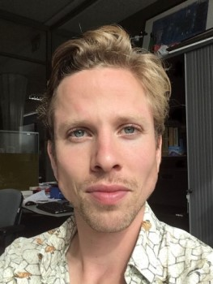
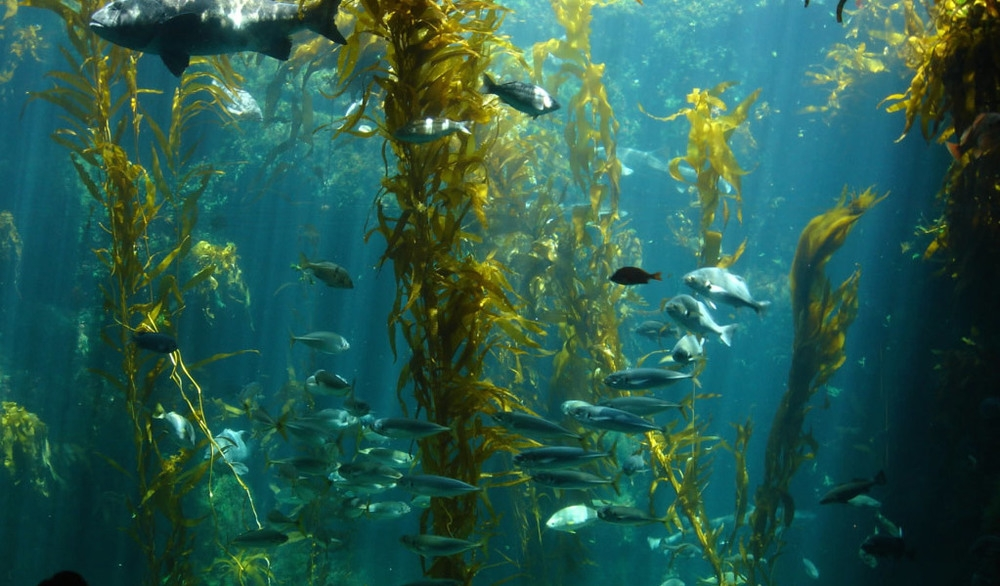
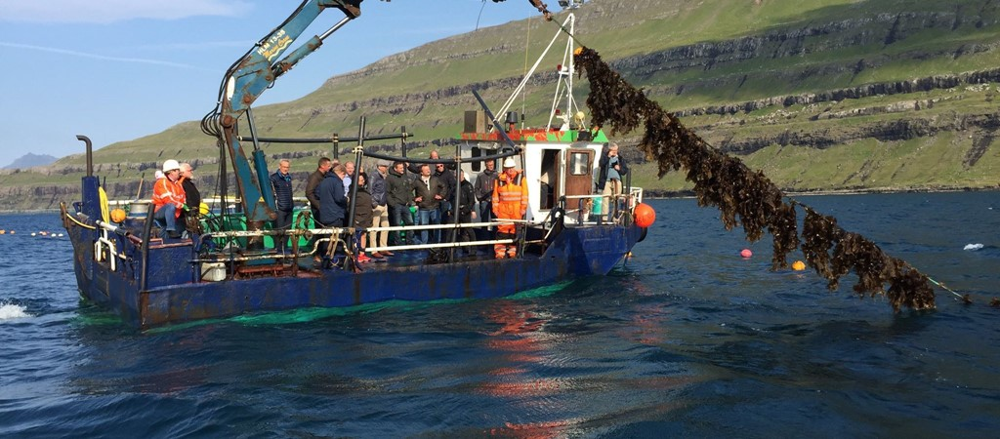
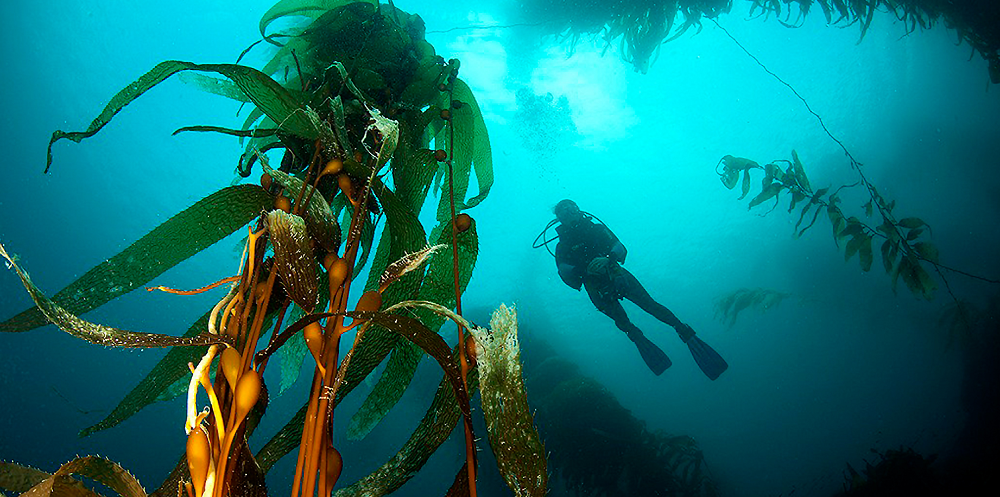

Otto van der Linden is a seaweed researcher and co-creator of SEASEEDS, a project tasked with solving a critical problem in seaweed cultivation: detachment. Together with his associate, Dr Tijs Ketelaar, Otto is bolstering and ensuring the continued development of the Dutch seaweed industry.
In this edited conversation with Peter Green, Otto spoke about his motivation for starting SEASEEDS and the major challenges facing seaweed initiatives globally.

How has SEASEEDS evolved to where it is now?
After my studies in biology at Wageningen University, I worked as a junior lecturer in the Chair Group of Cell Biology. After that, I wanted to do something more practical which could make the world greener.
I started chatting with all sorts of seaweed initiatives in the Netherlands and asked the teams what they needed help with. Seaweed cultivation in all developed countries requires a great deal of automation. With that in mind, there is a real need to understand the biology of seaweed. After these conversations, it transpired that a major biological drawback related to seaweed's tendency to detach from cultivation lines. Up to 90% of all small seaweeds detach. So, starting as a non-PhD researcher, I worked with Dr Tijs Ketelaar to raise some money and set-up the lab. SEASEEDS stands for Seaweed Attachment onto Substrates and Economic Embedding into Dutch Society.


What's next for SEASEEDS?
If everything goes well, towards the start of October we will receive a NWO grant of €1.5 million for four PhD students. In short, we will continue to investigate how to limit detachment of seaweeds. This involves improving seaweed attachment using microbial biofilms, substrate optimalisation and strain selection, but also reducing detachment through reduction of wave action in the cultivation locations. In addition, we also want to gain insights into the economic and ecological consequences of detaching seaweeds.
What's your take on the seaweed industry in the Netherlands? What major challenges are in store for people starting projects in this area?
In the Netherlands, ocean space is a big problem, and the sea gets really rough in the winter when we plan to cultivate kelp. Waves of eight or nine metres are no exception. There are a lot of technological challenges too. Reaching farms with boats and building the necessary infrastructure can be difficult.
In terms of the industry in the Netherlands, a key benefit here is that people are very collaborative in the space. Many acknowledge that we must move forward as one group.

What advice might you give to someone else starting their journey with seaweed projects?
One of the main things I discovered is that everything takes a lot of time. You can make a plan, but it never goes according to plan. So, you better just start, set some faraway goals, and go for it. For instance, getting a seaweed system in the laboratory up and running is tricky. It takes months and months before you can ask yourself nice questions and start experiments.
In addition, there are so many things to tackle in the space. You can't do them all at once. If you want to make a difference, you have to contribute in the small ways and in the things that you're good at.
What books would you recommend to someone who's trying to build ventures in this space?
The book "Protocols for Macroalgae Research" has been great and offers many helpful insights.